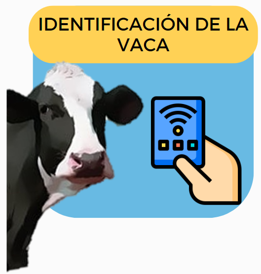
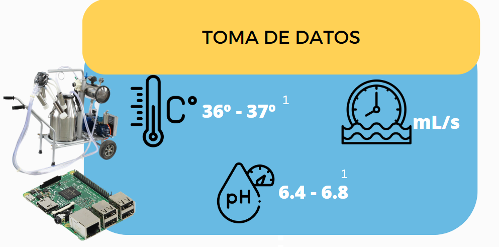
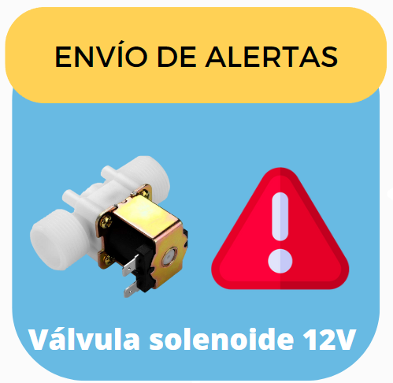

El proceso parte de identificar a la vaca por medio de NFC. La idea es que las vacas tengan una tarjeta en sus orejas que al ser escaneada el programam tenga el id que fue asignado a la vaca.
Una vez se tenga el id de la vaca, se activa el muestreo con los sensores. El objetivo es recopilar la información relevante de la leche para garantizar su calidad. Se realizan muestras de temperatura, ph y flujo.

1. Según la Resolución 000858 de 2016 emitida por el Ministerio de Salud y Protección Social de Colombia
Después de recopilar la información con los sensores, se envian los datos al sistema COW-DAL.
En tal caso que alguna de las variables muestreadas salga de los rangos de calidad se activa una válvula selenoide que impide el flujo de la leche al tanque central y enví una alerta al usuario. Con esto el ganadero o usuario final puede identificar si la vaca tiene alguna infección como mastitis, tiene fiebre o bajo su rendimiento de producción.
Con los datos recopilados se presenta un cuadro de mando para que se puedan tomar desiciones mas acertadas y se tenga un mayor control sobre el ganado. El sistema le permitira al ganadero o usuario dinal ver cifras de producción, ver el rendimiento individual de cada animal, ver el historial e identificar vacas enfermas.
Nuestro enfoque esta en ofrecerle a nuestros usuarios finales la solución a las necesidades a traves de nuestros servicios. El objetivo es que su producción aumente y tome decisiones acertadas.